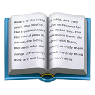

PROFESSIONAL SUMMARY
Experienced PHP/JS Full Stack Developer with over 8 years of expertise in building advanced web applications. Specializing in developing high-performance and scalable backend systems using frameworks like Symfony and Laravel Developed numerous e-commerce websites and educational platforms, implementing comprehensive solutions to increase user engagement and improve conversion rates. Possess in-depth knowledge of microservices architecture and Node.js technology, utilized for creating scalable APIs and backend services. Proficient in frontend frameworks like React and Vue.js to ensure consistent and responsive user interfaces. Experienced in applying design patterns, SOLID principles, and agile methodologies like Scrum/Kanban. Automated numerous CI/CD processes and implemented DevOps practices. Continuously expanding knowledge and skills in the field of Full Stack Development.
EXPERIENCE
DevOps Engineer
Excelead S.A.
March 2024 - Present
- Managed and configured servers and production environments, ensuring system reliability and performance.
- Implemented and maintained continuous integration and continuous delivery (CI/CD) processes to automate the build, testing, and deployment of applications.
- Recovered Git repository history to maintain continuity in source code development.
- Installed and configured SSL certificates, ensuring secure communication between servers and clients.
- Conducted audits and analyses of server environments to identify potential issues and bottlenecks, and implemented appropriate solutions.
- Collaborated closely with the development and system administration teams to optimize processes and implement DevOps best practices.
PHP Full Stack Developer (Freelance)
Skupszop.pl
February 2024 - May 2024
- Collaborated with a team of developers to build and maintain an e-commerce platform for selling used books using Laravel, ensuring secure login mechanisms and implementing comprehensive testing for the Book Database system.
- Developed responsive HTML/CSS views, optimized JavaScript scripts, and implemented performance enhancements to improve the overall user experience.
- Utilized industry best practices and Object-Oriented Programming principles to write clean, scalable, and maintainable code, ensuring efficient development and ease of future updates.
- Wrote extensive tests to verify the functionality and reliability of the systems, identifying potential issues and implementing solutions to enhance the platform's security, performance, and stability.
PHP Developer
Fluentbe.com, Warszawa
September 2023 - January 2024
- Collaborated with front-end developers to ensure a smooth integration of the back-end Symfony code into the user interface.
- Worked with coworkers to complete tasks.
- Created automated tests for ensuring code quality and stability.
- Established secure communication between frontend and backend services.
- Conducted unit testing and integration testing for functionality.
- Assisted frontend developers in integrating HTML and CSS designs into the backend logic written in PHP language.
- Created GraphQL types, queries and mutations to allow the frontend to request only needed data, enabling a performant application architecture
PHP Programmer
Retech Sp z o. o., Mielec
July 2020 - July 2023
- Developed a web application using Symfony that increased user engagement by 50%
- Refactored existing codebase to improve code readability and maintainability
- Utilized object-oriented programming to create reusable components that improved development speed
- Developed a secure authentication system that increased user privacy and data security
- Optimized database queries to improve application performance by 20%
- Used Git for version control and collaborated with other developers
- Monitored security system performance logs to identify problems
- Configured Apache web server and Linux operating systems to support the development of PHP applications
Programmer / Web Developer
Risenbit Sp z o. o
January 2015 - January 2020
- Delivered high quality solutions meeting customer requirements within tight deadlines
- Worked extensively with PHP, React, TypeScript, and Node.js
- Collaborated with other developers to design and develop complex database-driven web applications using PHP and SQL.
Programmer / Web Developer
Podkarpackie Centrum Innowacji
September 2018 - July 2019
- Design of the entire system for managing the company, and booking rooms
- Providing training in the use of the systems I designed
- Creating design graphics
- Worked with WordPress, React, Node.js and ASP .NET Core
PHP Web Programmer
MobiTouch sp. z o.o., Rzeszów
June 2015 - October 2015
- Extensive experience with WordPress, PHP, JavaScript
- Incorporated third-party APIs into the web application for data exchange and real-time updates
- Leveraged mastery of HTML, CSS, and JavaScript to build top-quality code for diverse projects
- Analyzed user needs to determine technical requirements
- Developed custom websites to meet individual client needs
- Used scripts and automated processes to improve website performance
- Enforced website standards for visual and design integrity
- Wrote supporting code for web applications and websites
- Implemented search engine optimization techniques to enhance website visibility
- Debugged websites to identify and resolve potential problems.
Junior Web Developer
IDEO Sp. z o. o., Rzeszów
September 2014 - February 2015
- Development of web applications and web interfaces
- Deep experience with WordPress
- Collaborated with designers and other developers to create a cohesive user experience across multiple platforms
- Ensured all webpages are SEO friendly by adding meta tags, titles, descriptions
- Developed custom widgets for displaying dynamic content on Wordpress sites
- Performed and directed Web site updates
- Provided technical guidance to clients regarding their WordPress needs.
EDUCATION
 Master of Science (M.S.) in Computer Science
University of Rzeszow
Bachelor of Science (B.S.) in Computer Science
Rzeszów University of Technology
REFERENCES
Jacek Kubrak — Podkarpackie Centrum Innowacji
CEO
+48 507 836 535
j.kubrak@pcinn.org
VOLUNTEER EXPERIENCE
Arduino Programming Instructor
Projektor (projektor.org.pl)
05/2017 - 09/2017
Rzeszów, Poland
- Taught programming basics to young students using Arduino microcontrollers
- Guided students through hands-on projects to apply their coding skills
- Initiated meetings between university students and children in small towns
- Fostered engagement between students and local communities